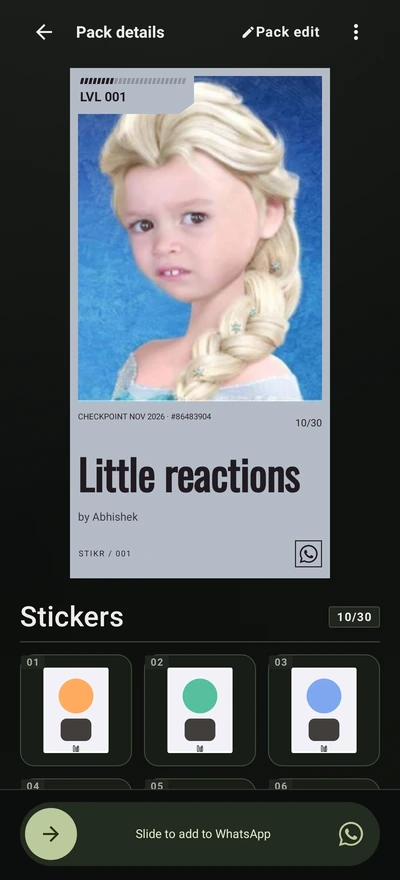
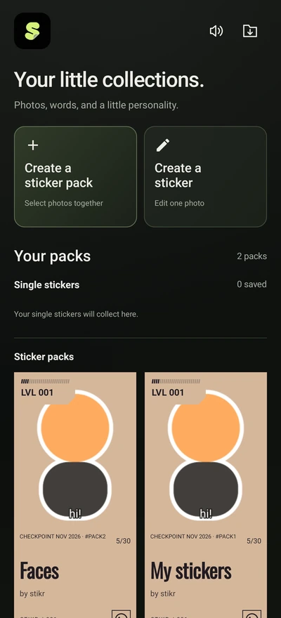
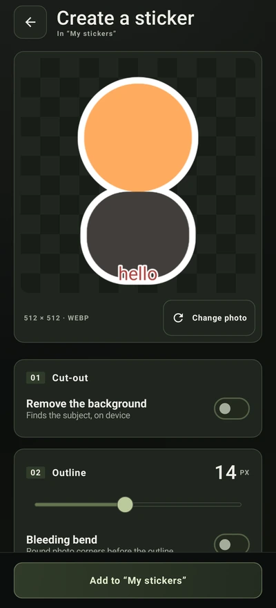

One sticker or a whole pack
Create a single sticker in your shared Stikr collection, or select several photos for a pack of up to 30.
Turn photos into stickers, add your own words, and take your packs to WhatsApp.

A pack made from your photos.Keep single stickers together, organise your packs, and return to an edit whenever you want.


App screens shown with example stickers. Swipe the screenshots on mobile.
Start with a photo. Keep the edits simple, or spend a little longer on the details.
Create a single sticker in your shared Stikr collection, or select several photos for a pack of up to 30.
Choose from 12 fonts. Drag, resize and rotate your words. Change the text colour, add a background, and format each layer.
Keep the full photo by default. Turn on background removal when you need it, round the corners, or add an outline. Edit the entire pack in one go.
Save your packs and edits to a local backup file. Restore that file after reinstalling or moving to another Android phone.
Use the sample photos or choose one of your own. Add text, try a font, and move it around the canvas.
On touchscreens, pinch to resize text and twist with two fingers to rotate it. Scroll inside the demo for the editing controls.
This is an interactive browser demo, not the Android app. Your selected photo stays in your browser. WhatsApp import and automatic background removal are available in the Android app.
You need an Android phone and WhatsApp or WhatsApp Business.
Full installation guideDownload the APK and open it. If Android asks, allow your browser to install this app, then follow the installation prompts.
Open Stikr and choose Create a sticker or Create a sticker pack. Pick the photos you want to use. Leave the pack name blank for a random name.
Add words, adjust the outline, or remove the background. Pack edit applies a common look to every sticker. Save when you are ready.
Complete the slider and confirm the import in WhatsApp. Normal packs need 3 to 30 stickers. Single stickers collect in the shared Stikr pack.
Use the folder icon on the home screen to save a backup file outside the app. Keep that file if you want to restore your collection later.
Yes. The Android app is free and does not require an account. Download the signed APK using the button on this page.
The browser demo lets you try the editing controls. Install the Android app to import sticker packs into WhatsApp or WhatsApp Business.
Stikr processes photos on your phone. The browser demo also keeps the photo you select in your browser. Neither sends that photo to a server.
Uninstalling removes the app's private data. Save a local backup file outside the app first. Reinstall Stikr and use Restore from file to recover it. Installing an update over the existing app keeps your packs.
Automatic cut-out needs Google Play services and its on-device model. If it is unavailable, keep the full photo. The browser demo does not run this Android feature.
Free for Android 8.0 and later. No sign-in.